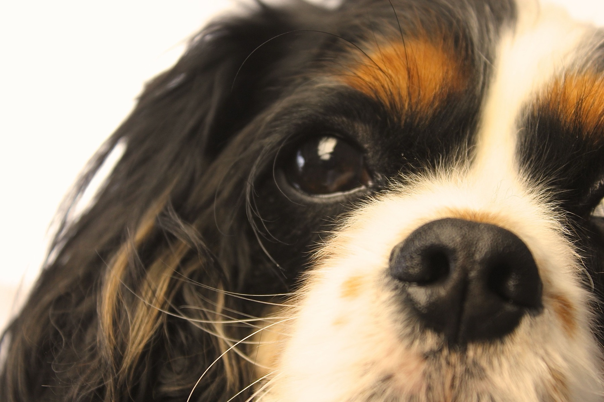
Kleine huisdieren · Nevele
Onze foto's.
Een blik in onze praktijk en achter de schermen.
Foto's
Een blik in de praktijk.
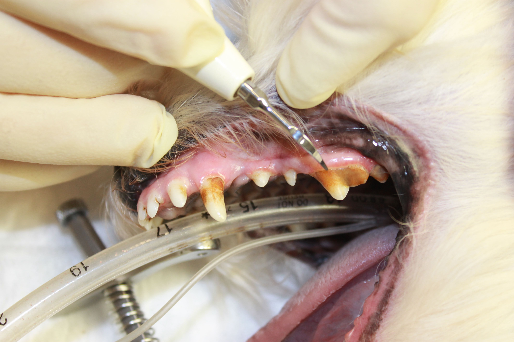
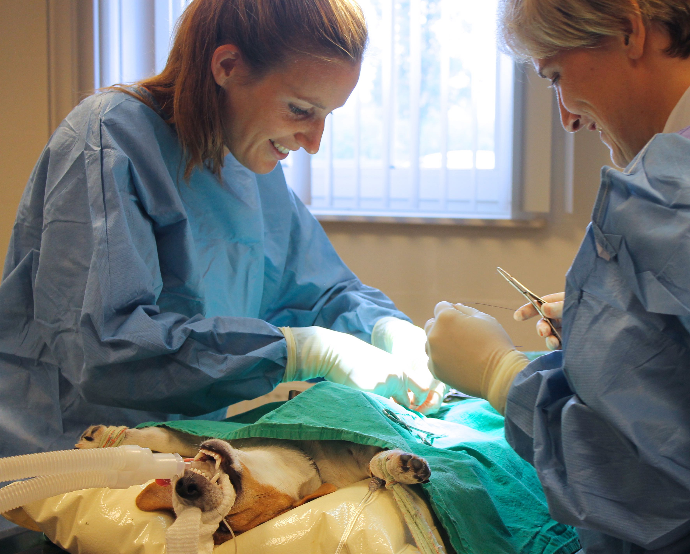
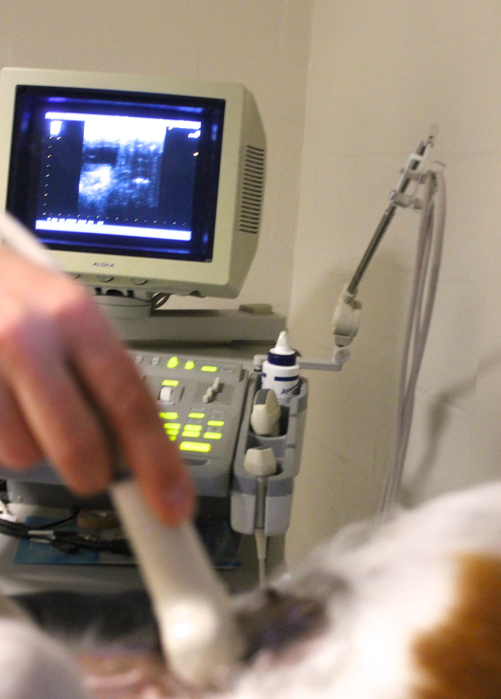
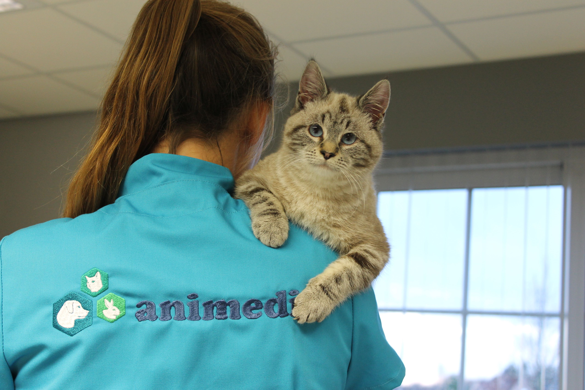
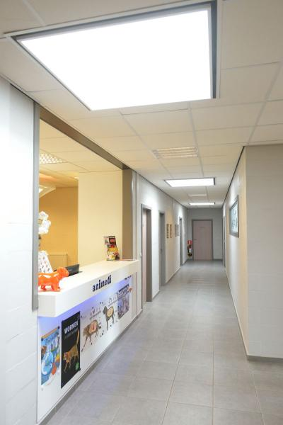
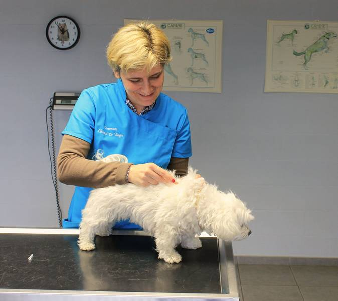
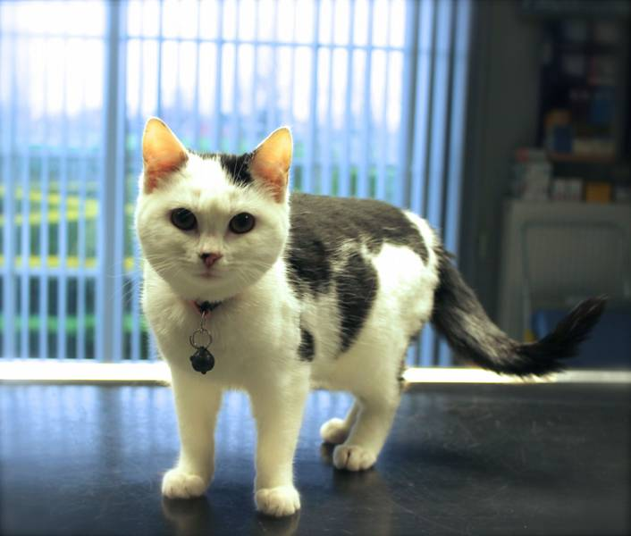
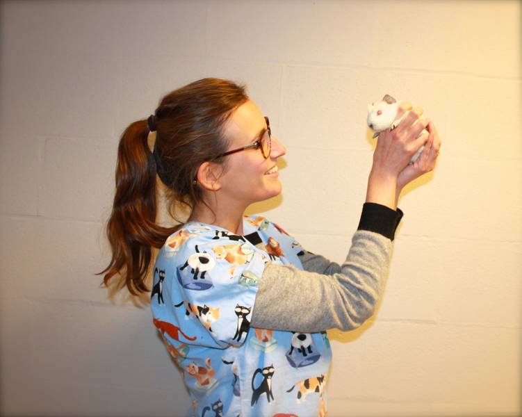
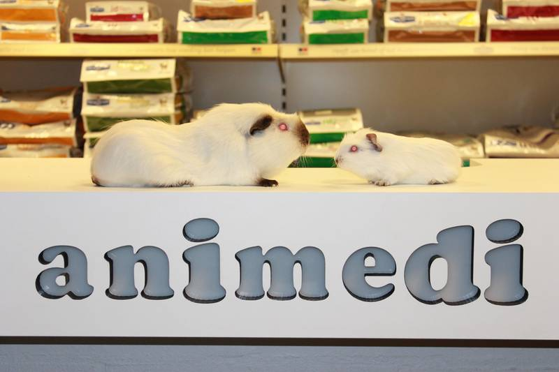
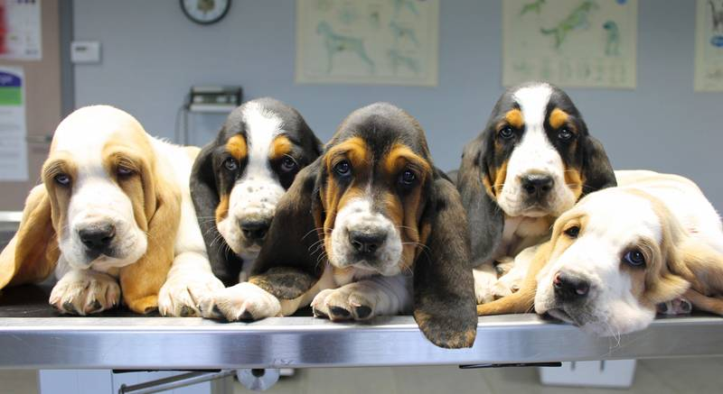
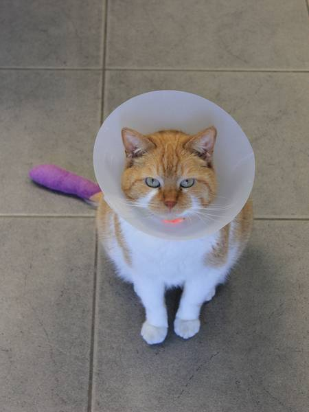
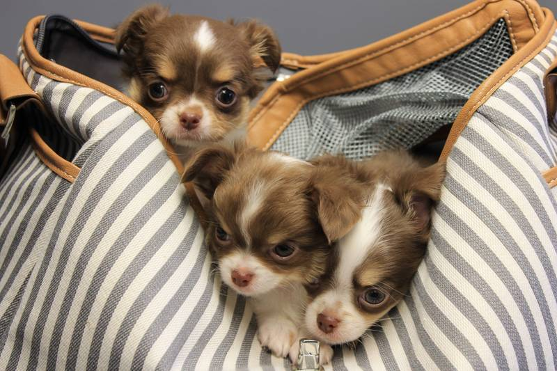
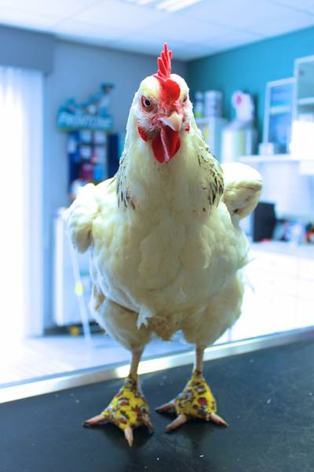
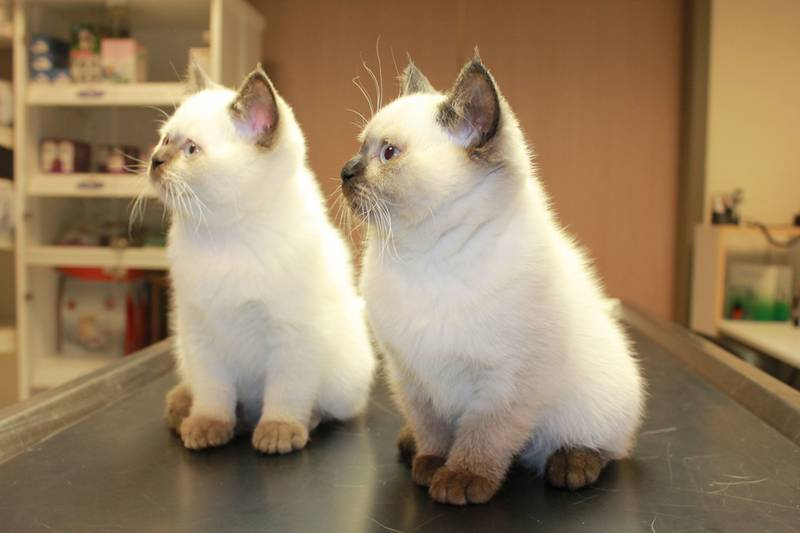
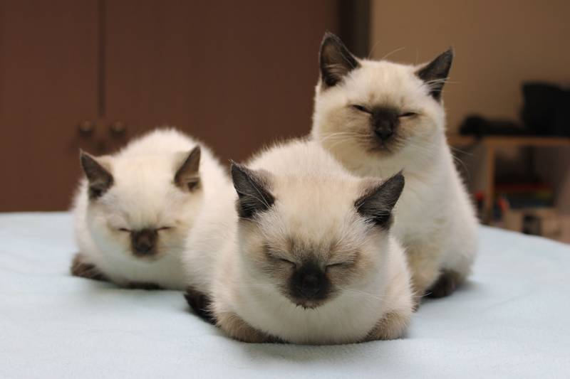
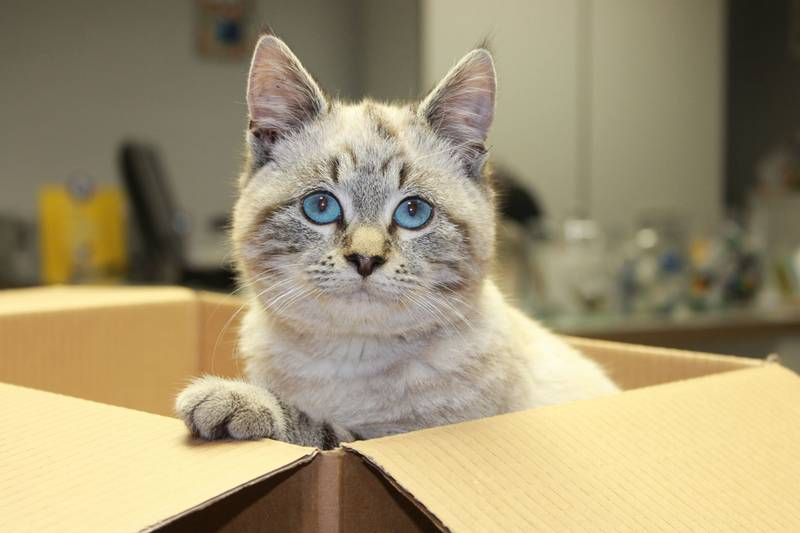
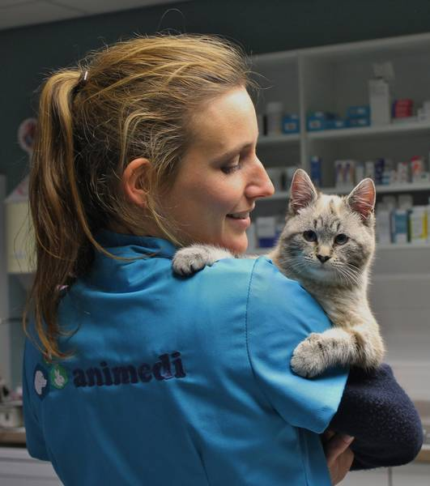
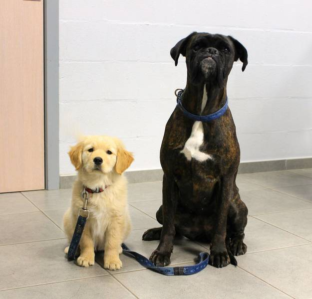
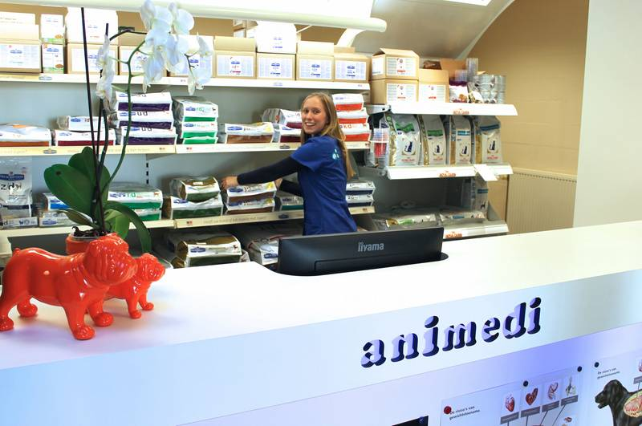
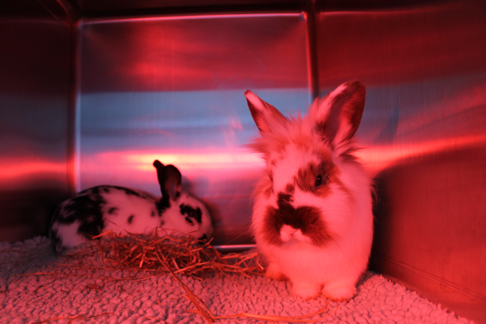
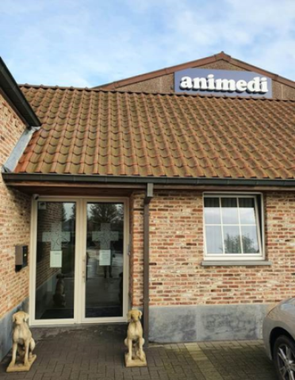
Een afspraak maken
We helpen uw dier graag.
Biebuyckstraat 62, 9850 Deinze (Nevele)